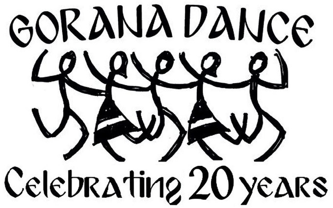

1. Комитско Либе (Komitsko Libe)
A dance of commitment in love from the Pirin region in Southwest Bulgaria.
Choreography by Kiril Haralampiev.
Rehearsal assistants: Galina Saharova, Inna Ognianova-Chorlev.

A dance of commitment in love from the Pirin region in Southwest Bulgaria.
Choreography by Kiril Haralampiev.
Rehearsal assistants: Galina Saharova, Inna Ognianova-Chorlev.
A ritual dance from Western Bulgaria. The flowers are intended to be given to the women's love interest.
Choreography by Elissaveta Iordanova.
A dance from Yambol in Bulgaria's Southeast Thracian region.
Choreography by Elissaveta Iordanova.
A common rhythm from the Pirin region in Southwest Bulgaria.
Choreography by Elissaveta Iordanova.
A ritual Easter dance originating from Kozichino, a village in Eastern Bulgaria. The village is also known as Erkech ("go faster"). The song is from the Philip Kutev National Folklore Ensemble and belongs to The Golden Collection of Bulgarian Folk Heritage.
Choreography by Margarita Dikova.
Rehearsal assistants: Galina Saharova, Inna Ognianova-Chorlev.
A dance from the Dobrudzha region in Northeast Bulgaria, so rich with wheat fields. The city of Varna on the Black Sea gave the name to this rhythm.
Choreography by Elissaveta Iordanova.
In this well-known folk song, the man asks the woman how she plants the peppers so well, and she shows him with her steps.
Choreography by Elissaveta Iordanova.
A ritual dance from the Pirin region in Southwest Bulgaria.
Choreography by Elissaveta Iordanova.
This rhythm comes from the Thracian region in Southern Bulgaria, where some of the steps are repeated three times.
Choreography by Elissaveta Iordanova.
This rhythm is from the Pirin region in Southwest Bulgaria.
Our only non-Bulgarian dancer, Jianying Hu, danced Ginka on the top of the mountain peak Tzerko Ri in the Himalayas in the spring of 2026, honoring our anniversary. You will see her at the end of the dance.
Choreography by Elissaveta Iordanova.
A dance from Sadovo, a village in Mid-Southern Bulgaria, close to Plovdiv. "Krivo" translates to "crooked", maybe because the steps are so difficult and the rhythm uneven.
Choreography by Elissaveta Iordanova.
An uneven rhythm from Southwest Bulgaria.
Choreography by Elissaveta Iordanova.
A dance from the Rodopi mountains in Mid-Southern Bulgaria.
Choreography by Elissaveta Iordanova.
This dance captures the ancient ritual of "nestinarstvo", where fire dancers known as "nestinari" walk and dance on live embers. It originates from Thracian sun worship asking the Sun God for health, prosperity and fertility.
Choreography by Galina Saharova.
Voice: Lily Grantcharova.
This dance depicts a pagan ritual. In Bulgaria, women who were believed to have special powers were asked to bring the fullness of the moon down onto the crop field for a rich harvest. The moon is viewed as a rhythmic life of the cosmos and is believed to govern all vital change.
Choreography by Elissaveta Iordanova.
Voice: Lily Grantcharova.
The legend tells the story of a beautiful maiden who refused to marry a rich traveler, and stayed committed to her village and love. A fountain was built in her name, and it still stands to this day in the town of Harmanli.
Choreography by Elissaveta Iordanova.
Contributions: Vencislava Petkova, Emilia Pironkova.
Voice: Lily Grantcharova.
Some dances are danced while singers sing a specific song.
Choreography by Galina Saharova.
A dance from Bulgaria's Northern region, referencing the Danube river that runs along the border with Romania.
Choreography by Elissaveta Iordanova.
A female dance connected with spring rituals and traditionally danced on Еньовден (Enyov Day / St. John's Eve).
Choreography by Galina Saharova.
This dance is danced in the Sofia region.
Choreography by Galina Saharova.
Bulgaria is famous for the many uneven beats in its folk dances. Yovino is one of them and has two uneven beats that define the dance phrasing: 7/16 and 11/16. You can recognize two strong beats on the 1 count and 6 count among the 8 counts in total (1+2+3+4+5+6+7+8).
Choreography by Elissaveta Iordanova.
This dance is one of the most famous folk dances in Bulgaria. It has a tempo that almost encourages a dance-off between its dancers. It involves a waving of the hands (ruce) which is what gives the dance its name.
Choreography by Elissaveta Iordanova.
This dance is part of a ritual on Lazarus Day. Lazarus is a symbol of health and longevity. The "lazaruvane" custom is performed by young girls called "lazarki". They go from house to house where they dance, perform rituals, cleanse with their handkerchieves, and offer blessings for health, happiness and prosperity.
Choreography by Elissaveta Iordanova.
A dance from the Shopski region in Western Bulgaria, around the capital of Sofia.
Choreography by Elissaveta Iordanova.
Template adapted from
HTML5 Up under the
Creative Commons Attribution 3.0 License